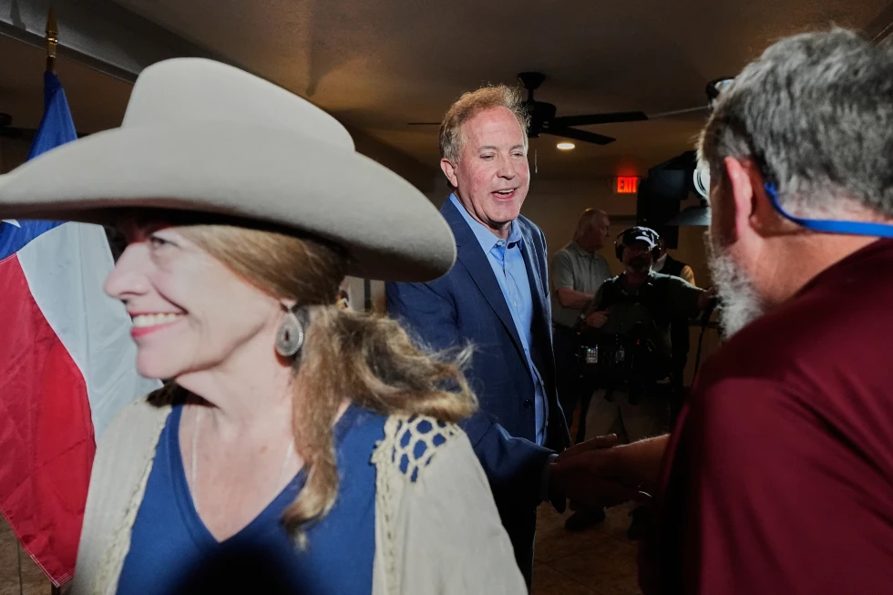

Monday, June 29, 2026
LIVE 3hrs ago
Texas Attorney General Ken Paxton, a Republican candidate for the U.S. Senate, greets supporters during a campaign stop, in Waco, Texas, Monday, March 2, 2026.


NEW YORK — Texas, a political powerhouse that Democrats have been battling to overthrow for decades, will host two of the most important Senate primaries in the country on Tuesday, marking the start of the 2026 election season.
Is this the year? Republican officials in Washington publicly worry that Democrats would have a rare opportunity to take the seat in November if conservative firebrand Ken Paxton defeated four-term incumbent Sen. John Cornyn. Republicans have already spent tens of millions of dollars on the race, and if no candidate receives 50% of the vote in the three-way primary that also includes Rep. Wesley Hunt, much more money will be spent before a runoff on May 26.
Meanwhile, Democrats must choose between two up-and-coming celebrities with different approaches. Among them are state representative James Talarico, a former middle school teacher pursuing a degree in divinity, and U.S. Representative Jasmine Crockett, who gained notoriety through conflict.
Arkansas and North Carolina are also holding primaries. Voting takes place only days after President Donald Trump began a massive military campaign against Iran, giving campaigns that might ordinarily be centered on domestic matters a pressing foreign policy component.
Here are some things to look out for on Tuesday.
For decades, Democrats have been speculating about a Texas upset. However, since Lloyd Bentsen's reelection in 1988, the GOP has failed to win a Senate campaign there.
Both parties think that things might change this year. However, a lot hinges on Tuesday's outcome.
A victory by Paxton, who has well-documented personal issues, would hurt their chances in November, according to several Republican leaders in Washington, including important Trump friends. In order to secure the seat, the party would have to take tens of millions of dollars away from other states if he became the nominee.
Although he is unlikely to receive the 50% required to avoid a runoff election versus the second-place finisher on May 26, Paxton could win first on Tuesday. Cornyn is most likely to assert that stance for the time being, but Hunt has also made a strong argument.
The party has already spent over $100 million in the primary, making it the most costly primary in the state's history, and the runoff could get even worse.
Democrats must make a difficult decision about the type of candidate they want to run against Trump's Republican Party.
Republicans claim in private that Talarico is their biggest concern. Unlike many national Democratic leaders, the 36-year-old Democrat combines theological fluency with progressive politics.
People desire "a return to more timeless values of sincerity and honesty and compassion and respect," according to Talarico, who condemns "politics as a blood sport."
Crocket, a 44-year-old former civil rights lawyer who has clashed with Republicans and attracted Trump's derision, is on the opposing side. She says in one of her ads that she "drives the president crazy." "Crockett fights for us" is the tagline of another.
In a recorded call that was distributed throughout the state over the weekend, former vice president Kamala Harris supported Crockett.
Harris stated, "Texas has the opportunity to send a fighter like Jasmine Crockett to the United States Senate."
Only three days have passed since the United States and Israel launched a significant offensive against Iran. According to Trump, the military campaign might take four weeks or longer. The president anticipates additional losses, and at least six American soldiers have already lost their lives.
Although foreign policy rarely influences U.S. elections, the conflict's timing could undoubtedly help divert voters' attention in primaries that have mostly concentrated on domestic matters. After all, a large number of military families reside in Texas.
The majority of Republican contenders have sided with Trump and his "America First" agenda. The president's assertive foreign policy actions may muddy that message and have his supporters face uncomfortable questions.
Cornyn and Paxton have jumped on Trump's bandwagon thus far. "I hope lives won't be lost needlessly, but there is always a risk involved," Cornyn stated on Saturday.
Whether or whether he is on the ballot, the president is at the center of Tuesday's elections.
Trump hinted at a possible Senate support during his Friday visit to Texas. However, he had not yet made a choice on the eve of the primary.
All of the Republican contenders have made an effort to persuade voters that they support Trump, who continues to have a large majority of the primary vote. Cornyn also employs Chris LaCivita, the former head of the Trump campaign.
Trump is also the front-runner in the Democratic primary, where Crockett has developed a national following due to her vehement criticism of Trump, much more than Talarico.
Texas might have a significant impact on the distribution of congressional power during the final two years of Trump's presidency, depending on Tuesday's outcomes. Furthermore, he most definitely does not like to be remembered as the Republican president who oversaw Texas' move to blue.
Despite Texas' dominance in the chattering class, North Carolina might have an even greater impact on the Senate's composition in November.
In an otherwise challenging electoral map, North Carolina offered Democrats one of the few chances to turn a Republican-held seat, even before Republican Sen. Thom Tillis announced his retirement in June of last year.
The front-runner in the six-person Democratic race is former two-term governor Roy Cooper. Michael Whatley, the former chair of the Republican National Committee who has Trump's support, is the most well-known figure in the Republican field.
In North Carolina's 4th District, incumbent Representative Valerie Foushee, 69, is up against progressive Nida Allam, 32, who has the support of Sen. Bernie Sanders, I-Vt., among other progressives, in what is anticipated to be a more competitive primary.
The first Muslim woman elected to public office in North Carolina, Allam is running on a platform of a "brighter future" as a county commissioner.